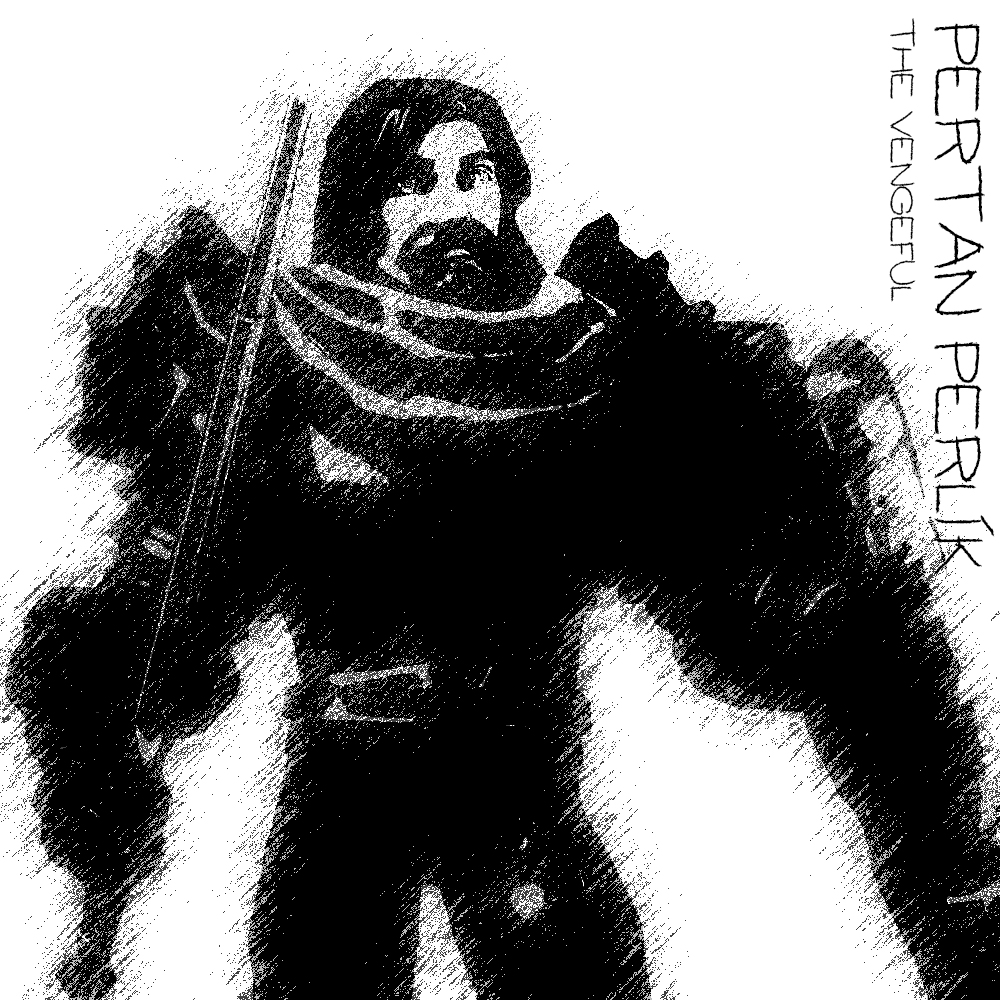
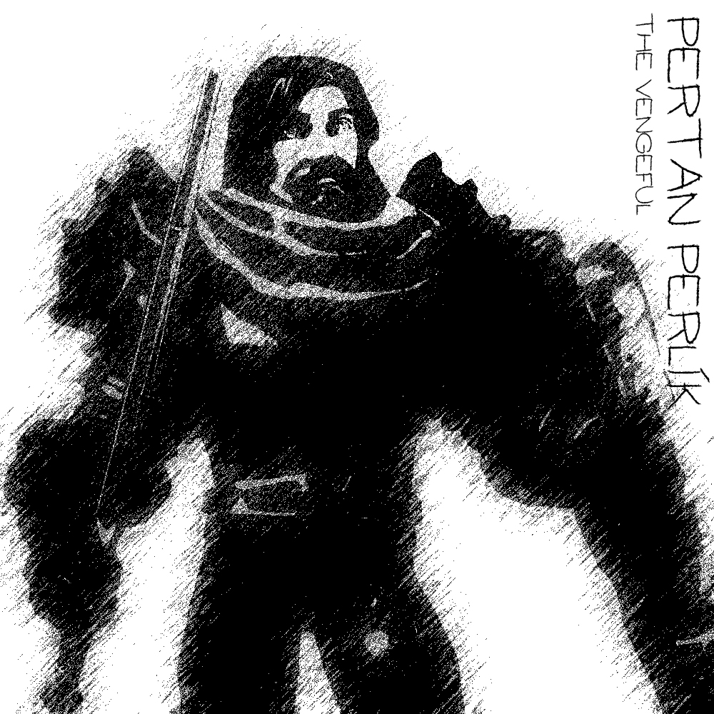

Pertan Perlík
Vesnice, kterou obýval i se svojí rodinou byla vydrancována bezejmennou hrůzou, Terorem mimo jejich chápání.
Ten poté bezestopy zmizel. Pertan byl jediný přeživší, nadosmrti poznamenaný touto ztrátou.
Rozhodl se, že se tím nenechá zpomalovat, a stane se paladinem.
Ovšem jeho trauma sahá hlouběji, než si dokázal Pertan představit.
Už během jeho mládí a paladinském tréninku se sem tam vyplavaly na povrch jeho temné tužby.
Tužby působit bolest pomstychtivost, ale zároveň něco, čemu by se možná dalo říkat kuráž.
Pertan svádí boj dobra se zlem. Zvítězí Pertanova kuráž nebo ho pohltí temnota, která v něm po té hrůzné události zůstala?
Pertan se do Pełzacze dostal v doprovodu Zuany, odkud ta se vzala to ví jen ona sama a Lloth. V Pełzaczi trávil nějaký čas, než se naskytly dobré skutky, které vykonat.
Dobrodružství, které prožil:
- Hledání ztraceného syna
- - Franci Jeszetovi se ztratil syn, boj s vlky
- Doprovod karavany
- - doprovod zboží do Garagoru, potkání Narmera a Neery
- Průzkum rozbitých chodeb podzemí
- - průzkum podzemních komplexů, na který dostal Emer zakázku, Pertan zde velmi tápal ve tmě
- Hledání Neery pt.1
- - Neeru někdo unesl, vyšetřování kdo jí unesl, Perlíkův moment boje, setkání s GGG a Alocou
- Hledání Neery pt.2
- - Neera se konečně dostala do Věže, kde družinu přivítal Raistlin a slíbil, že Neera se bude učit a bude mít ve Věži útočiště
 

Člověk Paladin

Malý Pertan